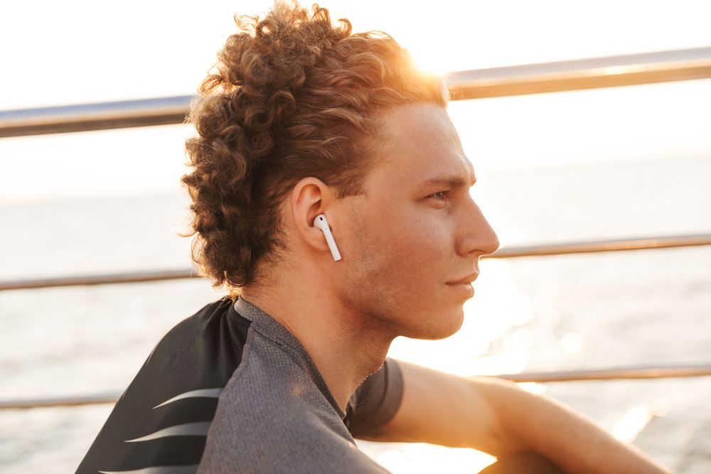

De Nouveaux Écouteurs Sans Fil Révolutionnent Le Marché Et Explosent Les Ventes En Seulement 2 Semaines
10 octobre 2019 | Martin Picard
Mai 2019: Une start-up américaine vient de dévoiler une nouvelle génération d’écouteurs sans fil, d’ores et déjà en passe de faire de l’ombre à ceux de la marque à la Pomme. Avec des milliers de nouveaux utilisateurs français conquis, les Airphones se présentent comme la révolution audio de ce début d’année...
Le mouvement de foule a été aussi soudain qu’inattendu. À peine entrés sur le marché français, que les nouveaux écouteurs sans fil « haut de gamme » chamboulent le monde de l’audio grâce à leur technologie avancée.
Ultra plébiscités par les amateurs de high-tech, les nouveaux écouteurs sans fil « haut de gamme » frôlent depuis quelques jours la rupture de stock. Afin de répondre à la demande grandissante, le constructeur de ces accessoires à la technologie ultra-performante a multiplié sa production par dix.
Clarité & Son Incroyables
Le marché de l’audio a été plus qu’actif ces dernières années. Entre les casques, les i-Pods, les écouteurs avec fil, etc. les utilisateurs de ces produits ont vu leurs habitudes évoluées au fur et à mesure des nouveautés.
Popularisée à partir de 2016, la technologie des oreillettes sans fil a ensuite profondément transformé l’usage des casques audio. Depuis, toutes les marques s’y sont mises. Et pas seulement pour écouter de la musique ! Simples d’usage et peu encombrantes, les oreillettes sans fil se trouvent de nombreux usages comme appeler, écouter ou partager de la musique avec ses amis.
Malheureusement, cette technologie n’était pas encore tout à fait au point entre les écouteurs qui ne sont pas maintenus aux oreilles, les mauvaises connexions ou encore une qualité sonore médiocre.
Il y a deux semaines, une start-up américaine a finalement révolutionné ce marché en dévoilant son dernier-né, des écouteurs sans fil « haut de gamme », intégrant une technologie encore inexploitée dans le domaine de l’audio.
Franck, fondateur des Airphones, explique: « Je suis amateur de musique mais à chaque fois que j’achetais un casque ou des écouteurs j’étais sans exception déçu. Après des études d’ingénieur, j’ai donc décidé de créer ma propre marque. Je me suis entouré d’une équipe de personnes qualifiées et aussi passionnées que moi. C’est ainsi que nous avons inventé les Airphones, des écouteurs premium mais au prix abordable. En peu de temps, le succès a été au rendez-vous aux USA d’abord ? et en Europe ensuite. C’est ce qu’il se passe quand on croit en ses rêves et que l’on fait tout pour mener à bien ses projets.»
Les Airphones sont ainsi les premiers écouteurs « haut de gamme » accessible à tous.
« Les Airphones vont changer à jamais votre façon d’utiliser des écouteurs » poursuit l’un des membres de l’équipe.
Grâce à leur technologie sans fil intégrée, les utilisateurs de ces écouteurs bénéficient en effet d’une qualité supérieure de voix et son.
Dotés d’un design ergonomique, ces écouteurs Bluetooth s’adaptent également parfaitement aux oreilles et sont ainsi extrêmement confortables. 100% stables, ils garantissent un maintien exceptionnel pendant les exercices intenses tels que la course, l'escalade, l'équitation, le camping et autres sports.
Bénéficiant d’une option de partage, les propriétaires des Airphones Colors peuvent les utiliser en mode jumeaux et ainsi partager de la musique entre amis ou en mode simple.
Samsung, Huawei, Apple, etc. Ces bijoux de technologie sont enfin compatibles sur Android et sur IOS, et disposent d’une batterie longue durée avec plus de huit heures d’autonomie grâce à sa batterie ultra performante.
En conclusion, les écouteurs sans fil Airphones :
- Offrent une compatibilité universelle
- Se caractérisent par une technologie Bluetooth, sans fil
- Ont une qualité de son premium
- Sont idéaux pour écouter de la musique ou passer des appels (entrants ou sortants)
- Possèdent un large choix coloris (rose, blanc, etc.)
- Disposent d’une batterie longue durée
- Sont à un prix qui défie toute concurrence
99% d’utilisateurs séduits et qui recommandent les Airphones
J'ai reçu les miens il y a deux semaines et à peine la première utilisation passée je ne pouvais plus les quitter. Ils sont super confortables. J’ai fait un test ce matin en courant. Rien à redire ; juste parfait

Très bon produit. J’ai été surpris la première fois par la qualité des appels, bien supérieure à tous les autres écouteurs que j’ai acheté précédemment. Mon travail m’oblige à passer beaucoup de coups de fil, ils sont pour moi un véritable outil du quotidien » explique Didier, commercial et originaire de la région de Strasbourg
Très pratique et facile à installer. Une qualité audio encore jamais entendue. C’est un copain qui me les a recommandés et je l’en remercie. Ils sont vraiment topissime
À qui sont destinés les Airphones?
Les Airphones sont destinés aux amateurs de musique à la recherche d’une qualité de son supérieurs. Aux sportifs qui souhaitent pratiquer leur activité tout en pouvant continuer à écouter leurs sons favoris. Aux professionnels ou aux personnes qui désirent rester connectés en restant mobiles et libres de leurs mouvements.
Avantages:
- Son de qualité supérieure
- Charge sur la route
- Dernière technologie Bluetooth 4.2
- Remise de 50% actuellement disponible
Inconvenients:
- Risque d'être épuisé sous peu
Comment acheter Airphones ?
En passant par le site officiel des Airphones vous pouvez commander sur internet et les recevoir à votre domicile en quelques jours.
- Commandez vos Airphones sur le site officiel.
- Installez vos écouteurs sur votre téléphone et profiter d’une qualité audio exceptionnelle.